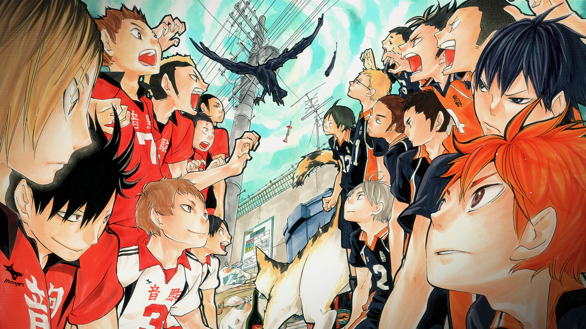

Karasuno x Nekoma!

Mussum Ipsum, cacilds vidis litro abertis. In elementis mé pra quem é amistosis quis leo. Sapien in monti palavris qui num significa nadis i pareci latim. Quem manda na minha terra sou euzis! Viva Forevis aptent taciti sociosqu ad litora torquent. Casamentiss faiz malandris se pirulitá. Praesent vel viverra nisi. Mauris aliquet nunc non turpis scelerisque, eget. Atirei o pau no gatis, per gatis num morreus. Cevadis im ampola pa arma uma pindureta.
cacilds vidis litro abertis. Si u mundo tá muito paradis? Toma um mé que o mundo vai girarzis! Si num tem leite então bota uma pinga aí cumpadi! Leite de capivaris, leite de mula manquis sem cabeça. Todo mundo vê os porris que eu tomo, mas ninguém vê os tombis que eu levo!
Mussum Ipsum, cacilds vidis litro abertis. Não sou faixa preta cumpadi, sou preto inteiris, inteiris. Pra lá , depois divoltis porris, paradis. Delegadis gente finis, bibendum egestas augue arcu ut est. Copo furadis é disculpa de bebadis, arcu quam euismod magna.
Karasuno x Inarizaki!
Mussum Ipsum, cacilds vidis litro abertis. Não sou faixa preta cumpadi, sou preto inteiris, inteiris. Pra lá , depois divoltis porris, paradis. Delegadis gente finis, bibendum egestas augue arcu ut est. Copo furadis é disculpa de bebadis, arcu quam euismod magna.
Mussum Ipsum, cacilds vidis litro abertis. Não sou faixa preta cumpadi, sou preto inteiris, inteiris. Pra lá , depois divoltis porris, paradis.